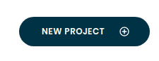

Creating your first Function in Conclave Cloud
This is a very basic tutorial on how to create a simple JavaScript function and upload it to the Conclave Functions service in the Conclave Cloud platform.
Prerequisites
In order to follow this tutorial you should already have done the following:
- Sign-up for the Conclave Cloud beta and log in to the portal.
- Download and install the
ccltool for your operating system and verify it works.
1. Create a new project
A new project can be created either in the portal or using the ccl tool.
Using the portal
Click the "New Project" button and enter a name for the project.

Using the CLI
ccl projects create --name "My Project"
Note: A project UID will be auto-generated for you. Optionally you may pick the UID of your project by adding
--uid my-project to the command above. Both UID and the name must be unique.
You may be prompted to login using your Conclave Cloud username and password.
2. Set the project as the default project in ccl
This is just for convenience to make subsequent command lines shorter.
Firstly you need to get the project UID/name. You can see this in the portal project
page, or you can find it using ccl.
ccl projects list
Set the project UID/Name as the default, replacing [UID/name] with the actual ID.
ccl save --project [UID/name]
Write a JavaScript function using any editor
Here's an example for you. Save it as 'simple.js'.
cclexports = {
sayHello: (name) => {
return "Hello " + name;
}
}
This creates a global object named cclexports that contains all of the
functions that should be exported from the JavaScript module. In this case,
there is one function named sayHello that returns a string that says "Hello "
appended with the name argument.
Note: The cclexports object is important. Conclave Functions will look for
this when the code is uploaded to determine what functions can be called within
the code module. Make sure you always populate this object with the function you
want to call.
Upload the function
You can use the ccl tool to upload the function:
ccl functions upload --name "sayHello" --code simple.js --entry "sayHello"
At this point your function is live and hosted! It can be called from anywhere in the world!
Just a word on the arguments before we invoke it. name is the name of the
function that appears in the portal. code defines the code module to upload.
entry defines the name of the exported function we want to call. The name
and the entry do not need to be the same.
Invoke the function
Again, you can use the ccl tool to do this:
ccl invocations invoke --name "sayHello" --args "[\"World\"]"
The result should be similar to this:
*** The expected code hash has not been specified and has been set to the value calculated when the function was uploaded. Please ensure this hash is correct. ***
Result:
{"name":"sayHello","version":"1.0.0","invocationId":"73904ecb224a4971904ecb224a69713d","start":1649432866241,"end":1649432866671,"duration":430,"response":{"status":"success","result":{"result":"ABUBAAAAAAAAAAAABmludm9rZQAAAACyBkdL95AXywZ8ayxSOKGyIAb07XFAFRqIKsHG66ytZHrQC5SUS+SIc/3bc3jN/sPl5TKZQefKvgSEn+MBttCI2n49X0FB0zQ5gQjal5Z7w2JbcL0VYWtuXdN34wbpKpHyAQ90oqAQ1nw7O3iQQAyHjfO2ho3WatdAKvXGCj6fbnfGHL+vTfApXhSsrEDsEdp8iuRuT/jp/0V7NgP/DhWiA8sJS9AE9VCv0HWap/Us0jvmFKQUrrKB/jHAqTmDvRi5EPCSyaN/I3X8+xbIWXYtiXN4UNHmb2OxfMUzYkRdozx1VGNorsw9oZkos5/NvUbdUWfRV1d9+42ywK6qIWtDTADP0ITIkOaX9CpmZWgck9PkeFK/YEHhrTostoLmKzNxniaEUD/nVHexjzNXX31XFWTZ7cqPlT8fZ3gn8IqD7VuwAoxXQ0tNPfF7TqUqTXthqCO+7F+e63hXuD4rmUsV+sMeoiezt7ZQeCTvg4psSyomABK3kpkbWD/lKz9mgNB87DQsGGs="},"success":true,"size":565},"logs":[],"cause":null,"statusCode":null,"waitTime":235.0,"timeout":false,"initTime":334.0}
Decrypted:
{ "return": "Hello World" }
That is the raw data that is returned by the function. The important bit is in
the Decrypted: section at the bottom as it contains the decrypted return of
the function. The ccl tool creates a private key for communicating with
Conclave Cloud and is the only entity that can decrypted the encrypted result
you can see in the data returned from the invocation.
And that's it!!!
You've successfully written, deployed and invoked your first function!
Things to try
Previous invocations
You can see a list of previous invocations using this command:
ccl invocations list
This shows information such as how long the function took to run as well as whether it was a cold or warm start (Google it!). It doesn't always update immediately so you may have to run it more than once.
Function list
You can see the list of functions that you have uploaded with:
ccl functions list
Explore the portal
The portal provides you with graphs and metrics about your functions and invocations. Have a browse around and see what you discover!